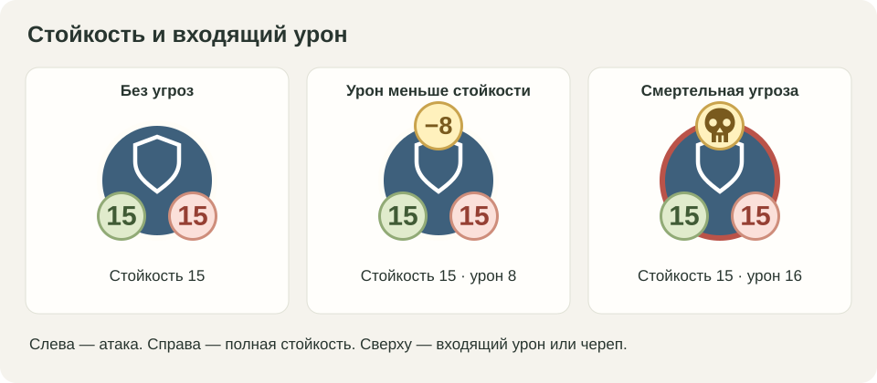
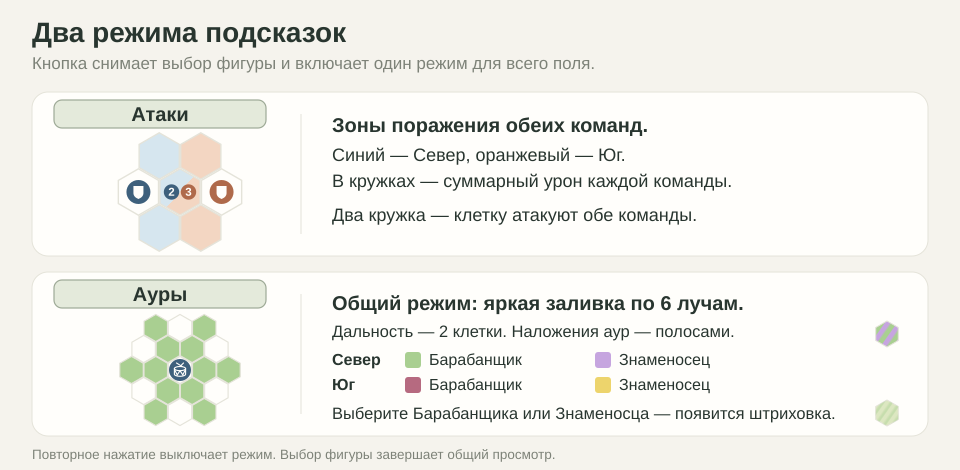
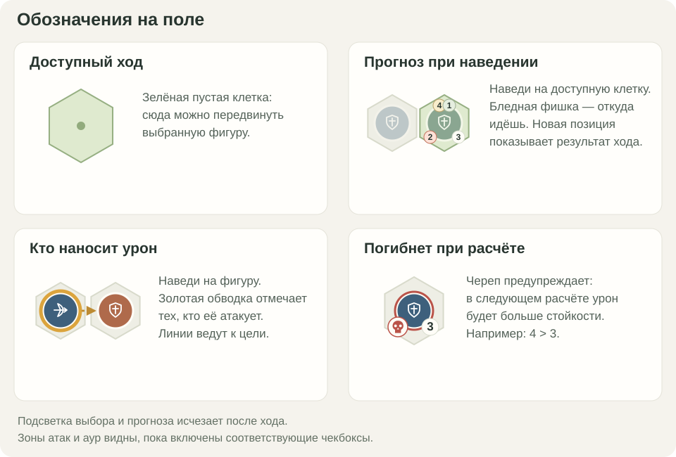

Цель игры
Уничтожьте все фигуры противника, включая Знаменосца и Командира. Если обе стороны одновременно теряют все фигуры — ничья.
Сила армии — в построении: Броненосцы прикрывают Лукарей, а Знаменосец и Командир помогают союзникам атаковать и выживать.
Как ходить
- За один ход передвиньте одну свою фигуру. Затем ходит противник.
- Можно пройти от одной клетки до максимума, указанного у фигуры. По дороге можно поворачивать.
- Через союзные фигуры можно проходить, но закончить ход нужно на пустой клетке.
- Через фигуры противника проходить нельзя. На занятой противником клетке останавливаться тоже нельзя.
Фигуры
- Броненосец прикрывает союзников и сражается вблизи. До дальнего края он ходит вперёд и вбок.
- Лукарь атакует на расстоянии.
- Знаменосец сам атакует и усиливает урон и дальность союзников.
- Командир не атакует. Он повышает стойкость союзников.
Характеристики фигур
Значения до усилений:
Как наносится урон
После каждого хода фигуры обеих сторон атакуют автоматически. Каждая бьёт сразу всех врагов, которых достаёт. Отдельно выбирать цель или нажимать «стрелять» не нужно.
- Сложите весь урон, дошедший до фигуры.
- Если урон больше стойкости — фигура погибает. Если равен или меньше — выживает.
- Все погибшие исчезают одновременно. В этом расчёте они ещё успевают атаковать, прикрывать и усиливать союзников.
Пример: стойкость 3, урон 3 — фигура жива. Урон 4 — погибла.
Урон не накапливается. После следующего хода всё считается заново. Исчезновение фигуры само по себе не вызывает ещё один расчёт.
Как работает поддержка
Область поддержки называется аурой. Она усиливает только союзников. Своей аурой фигура себя не усиливает, а от других получает бонусы. Бонусы складываются.
Ауры не увеличивают радиусы друг друга. Броненосцы не получают дополнительную дальность от союзных аур.
Подсказки
Сверху у фигуры — урон и дальность. Снизу — входящий урон и стойкость. Череп означает гибель при следующем расчёте. Наведение на фигуру показывает, кто её атакует; на доступную клетку — что произойдёт после перемещения.
«Атаки» показывает опасные клетки обеих сторон, «Ауры» — все области поддержки. Ауры обозначены цветной штриховкой поверх подсветки клеток. Выбранный Командир или Знаменосец показывает свою ауру и без этой галочки. Кнопки ← и → рядом с «Отменить» показывают последний ход без его отмены.
Обозначения в картинках

Кружки у фигуры и предупреждение о гибели.

Что показывают чекбоксы под полем.

Как читать подсветку и прогноз на поле.
Как начать
- Выберите режим, свою сторону и первого игрока.
- Оставьте «Дефолт» или выберите «Кастом» → «Настроить позицию» → «Готово».
- Нажмите «Начать». Для следующей партии нажмите «Новая игра».